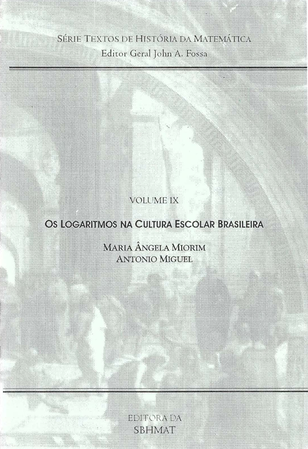
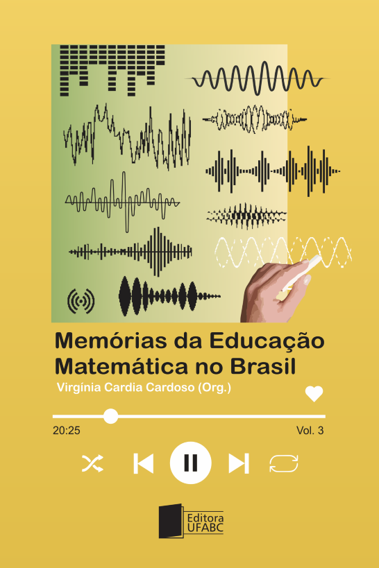
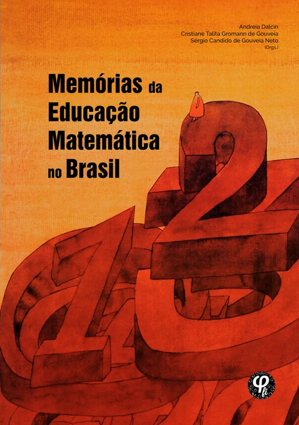
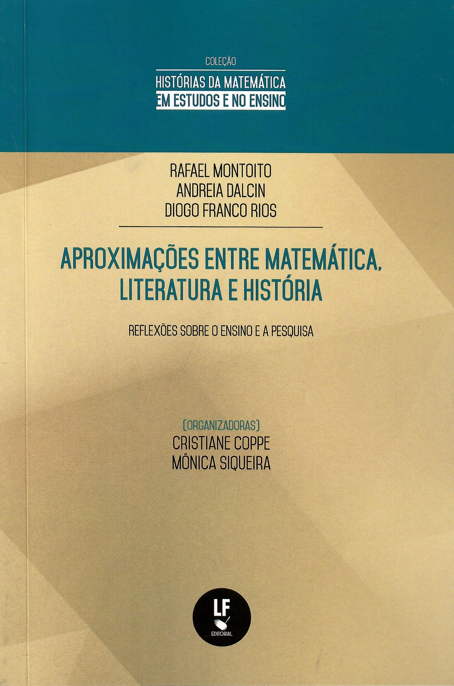
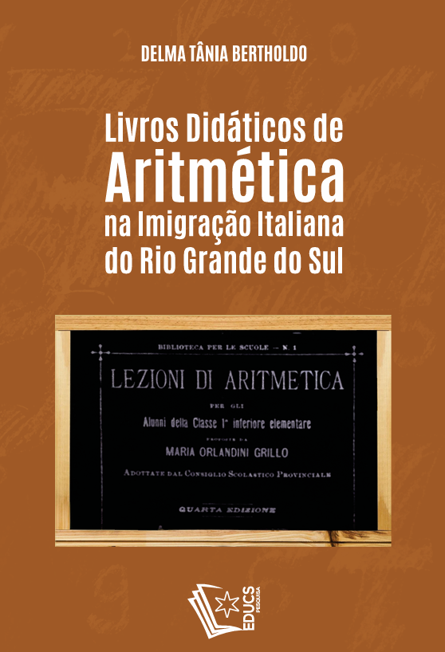

Livros
Obras publicadas por integrantes e pesquisadores vinculados ao HIFEM, reunindo investigações sobre História, Filosofia e Educação Matemática.
-

Os Logaritmos na Cultura Escolar Brasileira
Maria Ângela Miorin; Antonio Miguel
Obra dedicada à presença dos logaritmos na cultura escolar brasileira, discutindo apropriações, usos e ressignificações desse objeto matemático em livros didáticos, programas oficiais e práticas de ensino.
-

Memórias da Educação Matemática no Brasil — Vol. 3
Virgínia Cardia Cardoso (Org.)
Terceiro volume de uma série dedicada ao registro de depoimentos de educadores matemáticos que contribuíram para a constituição e consolidação da Educação Matemática como área de pesquisa no Brasil.
-

Memórias da Educação Matemática no Brasil — Coleção
Andreia Dalcin; Cristiane Talita Gromman de Gouveia; Sérgio Candido de Gouveia Neto
Coleção vinculada ao projeto coletivo do HIFEM, voltada ao registro de narrativas, experiências e memórias de professores e pesquisadores que participaram da constituição da Educação Matemática no Brasil.
-

Aproximações entre Matemática, Literatura e História
Autoria / organização a inserir
Obra voltada às relações entre práticas matemáticas, narrativas, literatura, história e formação, abrindo possibilidades de diálogo entre diferentes modos de produzir conhecimento.
-

Livros didáticos de aritmética na imigração italiana do Rio Grande do Sul
Delma Tânia Bertholdo
Publicação dedicada à circulação de livros didáticos de aritmética em escolas étnicas da região de colonização italiana no Rio Grande do Sul, considerando seus conteúdos e relações com o ensino da época.